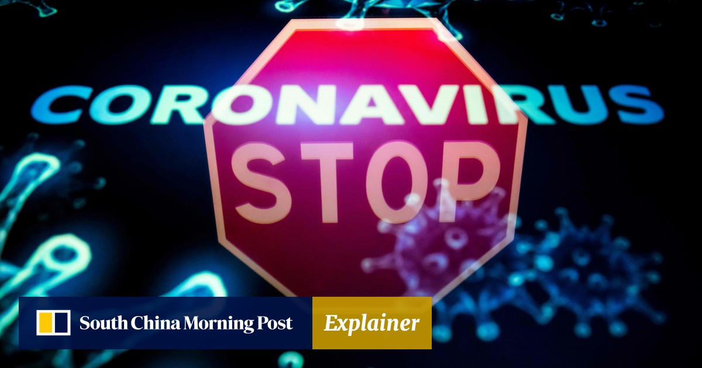
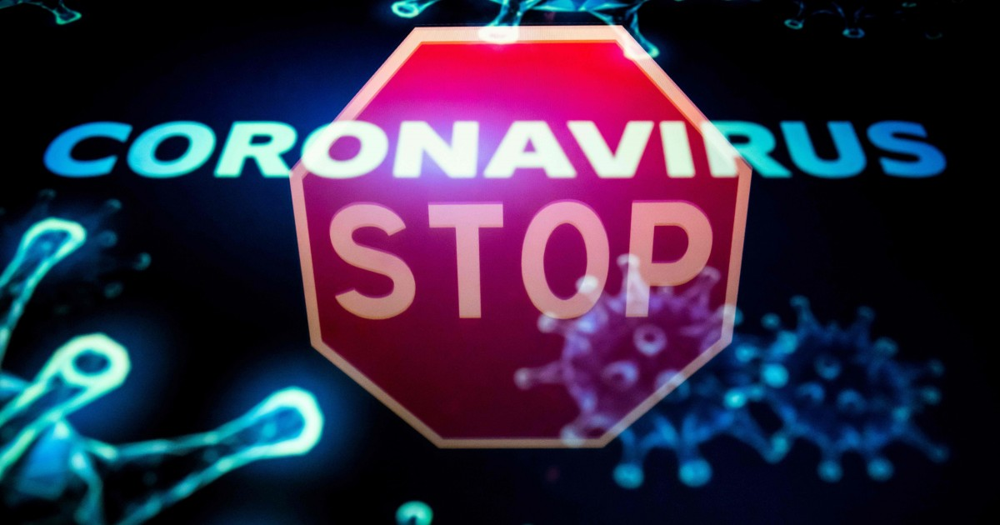
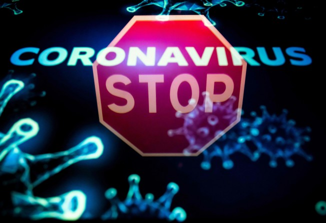

Explainer | Drinking alcohol kills coronavirus?
Explainer | Drinking alcohol kills coronavirus?Another one for the WHO myth-busters list
Misinformation has spread around the world about effective protection from the virus that causes Covid-19 The World Health Organisation offers answers to some of the most common queries about what works and what doesn’t Alcohol-based hand sanitizer and soap are the most effective options for disinfecting skin, according to the WHO.Photo: AFP
Posted On: 2020-11-22T09:00:19
Posted By: Nadia Lam



Content Date: 2020-11-22
Download Date: 2021-04-08
Document ID: L0C049NW1